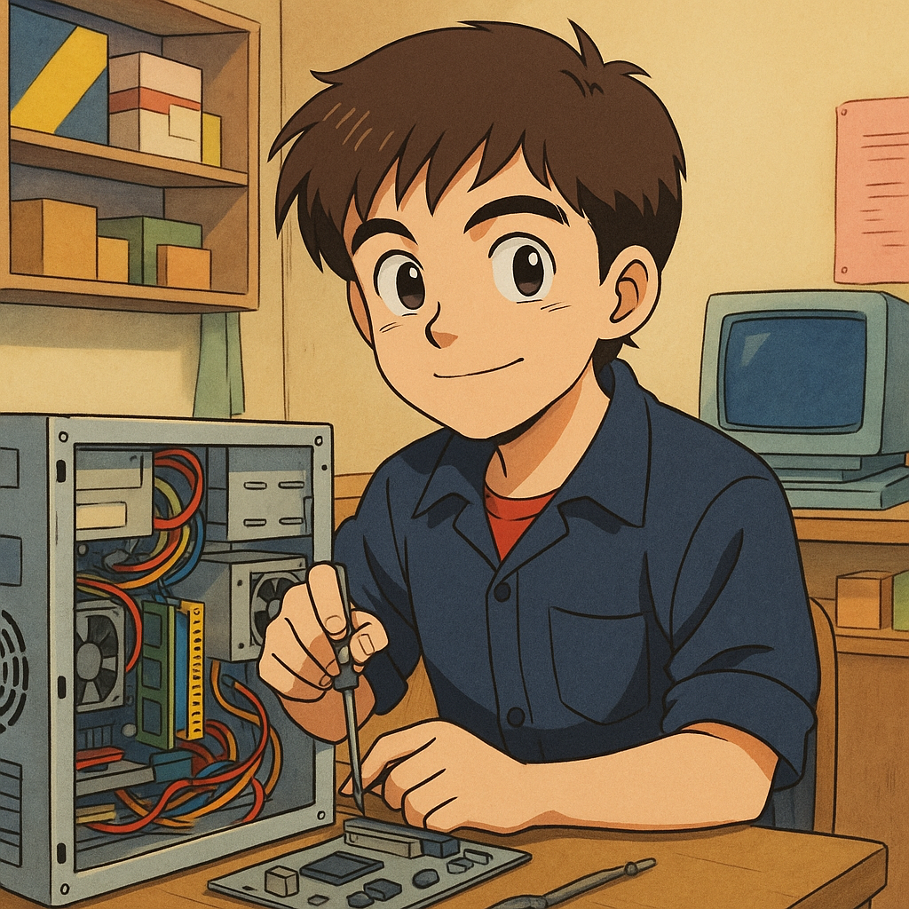
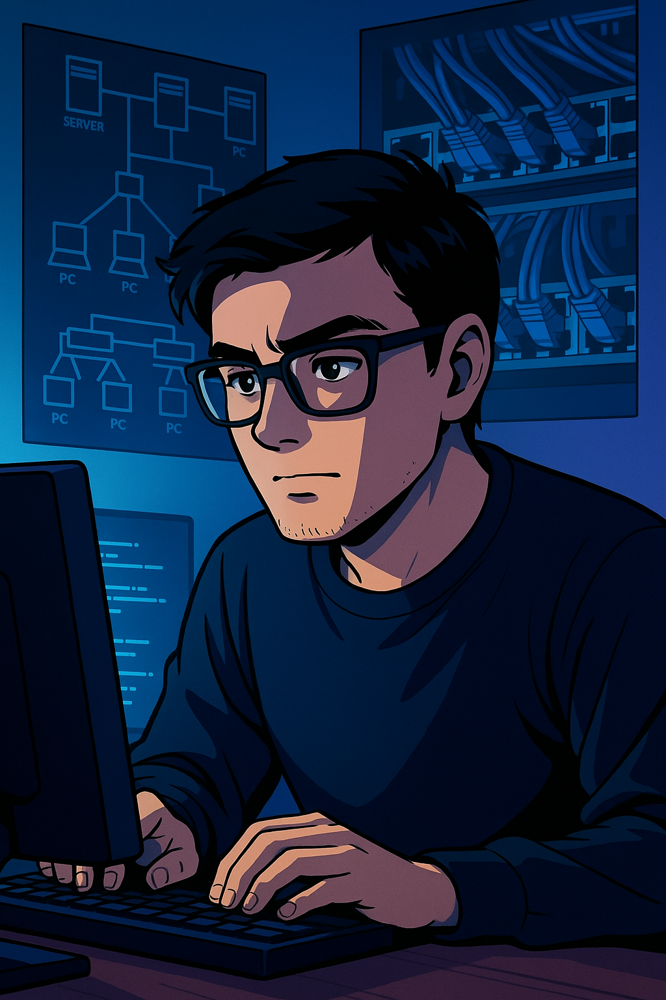

¿Quién soy yo?
Mi nombre es Daniel F. Rincón Mendoza, un
apasionado por la tecnología, los procesos técnicos y el
desarrollo web. No vengo de grandes títulos ni de atajos, vengo
del trabajo duro, de aprender con las manos y de fallar hasta
entender.
Empecé mis estudios universitarios en Ingeniería de Sistemas, pero
por diferentes circunstancias, tuve que dejar la universidad
parcialmente. Y aunque no fue fácil, nunca perdí la chispa por
aprender, crear y superarme.
Desde entonces, decidí convertirme en mi propio maestro. Amo
pensar, diseñar soluciones, conectar ideas y llevarlas a la
acción. Siempre me ha gustado lo técnico, lo práctico, lo que se
puede ver y tocar. Pero también me apasiona lo digital, lo lógico,
lo invisible que mueve lo visible.
Me considero una persona determinada, con buen humor, enfoque y
visión. Me encanta combinar lo técnico con lo creativo, y tengo
una meta clara: desarrollar sistemas y soluciones que unan el
mundo físico con el digital.
Este blog no es solo una página. Es un reflejo de mi historia, de
mi evolución, de mi forma de ver la vida. Y si estás leyendo esto,
quizás estés en una búsqueda parecida. Te invito a que sigas
leyendo… porque aquí comienza la transformación.
“Del barrio al máster: así comenzó todo” 🚀
Comienzo
Obstáculos
Escalando
Logro y Enseñanza
Descubriendo
Primer trabajo

El llamado de la programación 👨💻
No fue amor a primera vista. Desde mis primeros años explorando la
computadora ya tenía pequeños roces con el mundo del código… sin
saberlo. Usaba un editor de texto, pero no para programar, sino para
modificar videojuegos y cambiar cosas como los textos, colores,
tipografías. Era divertido, sí, pero ni siquiera conocía la palabra
“programación”. La escuché por primera vez justo antes de ingresar a
la universidad, en esas entrevistas de admisión donde uno empieza a
ver nombres raros como “algoritmo”, “estructura de datos”, y ese tal
“lenguaje Java”. La verdad, elegí la carrera porque era la opción
tecnológica más accesible en ese momento y yo tenía un interés claro
por los computadores. Pero no tenía idea de lo que me estaba metiendo.
Era un adolescente confundido, como muchos en esa etapa, con un grupo
de amigos donde todos querían ser de todo.
Cuando empezaron las materias de fundamentos y lógica, sentí algo de
curiosidad. Pero esa curiosidad se convirtió en decepción. Nuestro
primer lenguaje fue Java, y lo vimos en un entorno llamado NetBeans.
Aquello me pareció una pesadilla de configuraciones y errores. Nada
fluía. Recuerdo pensar: “¿Así se hace un programa para un PC? ¿En
serio? ¡No tiene sentido!” La verdad, me desenamoré antes de conocerla
bien. De ahí en adelante, durante varios semestres, me enfoqué en
otras áreas que sí me daban satisfacción: soporte técnico,
instalaciones de programas, mantenimiento de equipos, redes… y dejé la
programación en pausa.
Universidad
Pero el destino no había terminado conmigo. Ya en una nueva sede de la
universidad, con otro profesor y una nueva materia, llegó lo que
cambiaría todo: desarrollo web. No entendí nada al escuchar ese
nombre. Pero bastaron las primeras clases para que todo encajara: solo
con un editor de texto y un navegador podía ver resultados en tiempo
real. ¡Era mágico! HTML, CSS y JavaScript básico me abrieron la puerta
que tanto había buscado. Me dije: “¡Dios santo! ¿Por qué no vi esto
antes?” Por primera vez sentí que podía entender, avanzar, construir.
Lo que antes me parecía un lío, ahora tenía lógica, ritmo y propósito.
En ese momento yo ya estaba trabajando en campo, instalando servicios
de internet y redes. Aún no era técnico en cableado estructurado, pero
algo dentro de mí hizo clic. Entendí que podía unir mis dos pasiones:
las redes físicas y el desarrollo de sistemas. Algunos decían que ya
era tarde para aprender a programar. Incluso profesores me lo dijeron.
Que yo ya estaba “en otro camino”, que mejor me dedicara a lo que ya
sabía. Pero no les creí. Fue justo entonces cuando, por circunstancias
personales difíciles, dejé la universidad. Y lejos de rendirme, empecé
a aprender por mi cuenta. Aprendí las bases de varios lenguajes, bases
de datos, y comencé a crear sistemas pequeños, hechos a mano, pensados
para optimizar redes de datos y procesos reales en instalaciones.
Programando

Hoy puedo decir con orgullo que estoy uniendo lo técnico con lo digital, lo físico con lo lógico. La programación no solo es parte de mi vida: es la herramienta con la que le doy forma a mis ideas. Y sí, sigo aprendiendo solo. Pero con convicción, con ganas, y con la certeza de que sí se puede. Aquí estoy, y aquí voy. 💻🔌 Conectando mundos, uniendo saberes.
El sueño de unir dos mundos 💻👷🏾
Ideas que toman forma ✨
Ha sido un camino desafiante, sí... pero también lleno de momentos increíbles, aprendizajes y pasión. La verdad, nunca supe cómo iba a llegar hasta aquí… pero siempre lo imaginé. Lo veía en mi mente, lo sentía en el corazón. Todo parecía difícil, incluso imposible, pero algo adentro me impulsaba. Hoy, mirando atrás, solo puedo sentir gratitud. Soy libre, y eso no tiene precio. No existen los atajos. No hay fórmulas mágicas ni trucos secretos. Hay decisiones. Hay acción. Hay que proponerse un objetivo, visualizarlo con fuerza, programarlo y actuar. Si lo puedes ver con claridad en tu mente, puedes construirlo con tus manos. Pero hay que trabajar. Ser constante. Seguir aunque duela. Y sobre todo, jamás permitir que alguien –ni siquiera tú mismo– apague esa chispa que te impulsa. Al final, no tenemos nada que perder… porque nada de lo que hay en este maravilloso mundo nos pertenece para siempre.
Conclusión
Este blog no es solo para contar lo que he hecho. Es para recordarme –y recordarte– que todos tenemos dentro la capacidad de transformar lo que somos. No importa si estás en cero, si sientes que ya es tarde o si el camino es confuso… Mientras haya intención, enfoque y acción: hay chance de reescribir tu historia. Y eso es lo que pienso seguir haciendo: uniendo saberes, ayudando a otros, creando soluciones desde mi esencia… Porque apenas estamos comenzando.